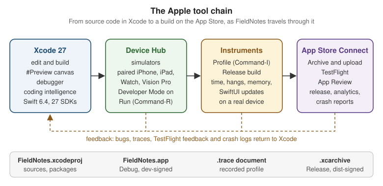

Getting Started with Apple Platforms
|
This content was generated with the assistance of AI and should be verified against the official documentation before being relied on in production. |
This section covers building apps for Apple’s platforms with Apple’s own tools and frameworks: Swift, SwiftUI,
the platform UI frameworks underneath it, and Xcode. Every page is written against the 27 releases of the
operating systems — iOS 27, iPadOS 27, macOS 27, watchOS 27 and visionOS 27 — built with Xcode 27 and
Swift 6.4, while the sample app keeps a deployment minimum of 26 so that it still runs on last year’s
devices. Anything that exists only on the 27 releases is labelled "new in 27" in the prose and guarded with
if #available in the code.
The Swift language itself is not re-explained here; the Swift reference covers it, and this section links to it wherever a language feature matters. What this section adds is everything the Swift reference leaves out: the app frameworks, the tools, and the platform conventions.
Every code example across the section is a slice of one running app, FieldNotes: a note-taking app for people working outdoors, with notebooks, tagged notes, pinning, a watch companion, a widget, and (on later pages) on-device summaries, sync and maps. This page explains the platforms, installs the tools, and creates the first version of FieldNotes; every later page grows that same codebase.
The Five Platforms (and tvOS)
Apple ships one operating system per device family. All of them share the same kernel (XNU), the same core libraries (Foundation, Swift standard library, Core Foundation, Dispatch) and the same app model, so one codebase can target most of them. They differ in input model, screen size, and what the user expects an app to feel like.
| Platform | Devices | What shapes an app |
|---|---|---|
iOS |
iPhone, including the foldable iPhone Duo (new with iOS 27.1) |
Touch first, one window at a time, compact width in portrait, strong expectations around navigation stacks and tab bars. |
iPadOS |
iPad |
Shares most of the iOS SDK, but adds resizable windows, multitasking, pointer and keyboard input and a menu bar, so layouts must adapt from compact to very wide. |
macOS |
Mac (Apple silicon) |
Pointer and keyboard, many windows, menu bar commands, a Settings window and the menu bar extras area. macOS 26 is Tahoe and macOS 27 is Golden Gate; macOS 27 runs only on Apple silicon and is the last release that includes Rosetta. |
watchOS |
Apple Watch |
Glanceable sessions measured in seconds, Digital Crown input, complications and widgets on the watch face. |
visionOS |
Apple Vision Pro |
Spatial computing: windows, volumes and fully immersive spaces placed around the user, controlled with eyes and hands. |
tvOS, on Apple TV, is the sixth platform. It uses the same frameworks (SwiftUI and UIKit) with a focus-based remote-control input model. FieldNotes does not target tvOS, so this section mentions it only where the difference matters.
Year-Based Versions and the 27 Baseline
In 2025 Apple aligned every operating system on one year-based number: the releases after iOS 18 and macOS 15 became 26, numbered like a car model year after the year in which most of their life is spent (a release shipped in autumn 2025 is used mainly in 2026). The 2026 releases, the baseline of this section, are 27. There never was an "iOS 19". The same numbering now applies to iPadOS, macOS, watchOS, visionOS and tvOS, so "the 27 SDK" means the same year’s SDK on every platform, and Xcode 27 ships all of them together.
FieldNotes builds with the 27 SDKs but deploys to 26, which is the common setup for a real app: you compile against the newest SDK to get the newest APIs and the newest design, and you keep the minimum one year back so that last year’s devices still install the app. The cost is that every call to a 27-only API needs an availability check:
import SwiftUI
struct NoteDetail: View {
let note: Note
var body: some View {
ScrollView {
Text(note.body)
.padding()
}
.navigationTitle(note.title)
.toolbar {
if #available(iOS 27, macOS 27, watchOS 27, visionOS 27, *) {
// A 27-only toolbar item would go here (see the navigation page).
}
}
}
}See Apple Developer Documentation — Running code on a specific platform or OS version
and Attributes and Compiler Control for
how #available and @available work in the language.
Device Families
A single app target declares which device families it runs on. For iOS and iPadOS this is the
TARGETED_DEVICE_FAMILY build setting (1 is iPhone, 2 is iPad); Xcode writes the matching UIDeviceFamily
key into the app’s Info.plist. A multiplatform SwiftUI target such as FieldNotes lists all supported
platforms in SUPPORTED_PLATFORMS instead:
# Excerpt of the FieldNotes target's build settings, as shown by
# xcodebuild -project FieldNotes.xcodeproj -target FieldNotes -showBuildSettings
SUPPORTED_PLATFORMS = iphoneos iphonesimulator macosx xros xrsimulator
TARGETED_DEVICE_FAMILY = 1,2,7
IPHONEOS_DEPLOYMENT_TARGET = 26.0
MACOSX_DEPLOYMENT_TARGET = 26.0
XROS_DEPLOYMENT_TARGET = 26.0Family 7 is Apple Vision Pro. The watch app is a separate target, FieldNotesWatch, because a watchOS app is
always its own bundle. At runtime, code can ask which idiom it is running on, which is the one legitimate use
of a runtime check where a layout-driven approach (see
SwiftUI Layout) is not enough:
#if os(iOS)
import UIKit
extension NoteStore {
/// iPad keeps the sidebar visible on launch; iPhone starts on the note list.
var prefersSidebarOnLaunch: Bool {
UIDevice.current.userInterfaceIdiom == .pad
}
}
#endifOne UI Framework Everywhere, Three by Platform
Apple has one declarative UI framework that runs on every platform, and one imperative framework per platform family that predates it:
-
SwiftUI runs on iOS, iPadOS, macOS, watchOS, visionOS and tvOS. You describe the interface as a function of state and the framework updates the screen when state changes. It is the default for new apps and the framework every FieldNotes screen is written in.
-
UIKit is the object-oriented framework for iOS, iPadOS, tvOS and visionOS (
UIView,UIViewController,UIApplication). SwiftUI on those platforms is built on top of it, and you still reach for it for a few controls and app-level hooks. -
AppKit is the macOS equivalent (
NSView,NSViewController,NSApplication), older than UIKit and with its own conventions such as the responder chain driving menu commands. -
WatchKit used to be the UI framework for watchOS. What remains of it is infrastructure: the app delegate, background refresh tasks and extended runtime sessions. New watch interfaces are written in SwiftUI.
-
RealityKit renders 3D content and is used next to SwiftUI on visionOS (and for AR on iOS). SwiftUI places a
RealityViewin a window, a volume or an immersive space.
The frameworks meet in the App type. FieldNotes is pure SwiftUI, but it can plug into each platform’s
older app delegate when it needs a callback that SwiftUI does not expose:
import SwiftUI
#if os(iOS)
final class FieldNotesAppDelegate: NSObject, UIApplicationDelegate {
func application(_ application: UIApplication,
didFinishLaunchingWithOptions launchOptions: [UIApplication.LaunchOptionsKey: Any]?) -> Bool {
// Register for remote notifications here (see the notifications page).
true
}
}
#endif
@main
struct FieldNotesApp: App {
#if os(iOS)
@UIApplicationDelegateAdaptor(FieldNotesAppDelegate.self) private var appDelegate
#endif
var body: some Scene {
WindowGroup { ContentView() }
}
}On macOS the same hook is NSApplicationDelegateAdaptor, backed by AppKit:
#if os(macOS)
import AppKit
final class FieldNotesMacDelegate: NSObject, NSApplicationDelegate {
func applicationShouldTerminateAfterLastWindowClosed(_ sender: NSApplication) -> Bool {
false // FieldNotes keeps running in the menu bar.
}
}
#endifSee Apple Developer Documentation — NSApplicationDelegateAdaptor and Apple Developer Documentation — AppKit.
In FieldNotesWatch, the WatchKit delegate is wired the same way through WKApplicationDelegateAdaptor:
import SwiftUI
import WatchKit
final class WatchDelegate: NSObject, WKApplicationDelegate {
func handle(_ backgroundTasks: Set<WKRefreshBackgroundTask>) {
for task in backgroundTasks {
task.setTaskCompletedWithSnapshot(false)
}
}
}
@main
struct FieldNotesWatchApp: App {
@WKApplicationDelegateAdaptor(WatchDelegate.self) private var delegate
@State private var store = NoteStore()
var body: some Scene {
WindowGroup {
WatchNoteList() // the watch's compact list, pinned notes first
.environment(store)
}
}
}See Apple Developer Documentation — WKApplicationDelegateAdaptor and Apple Developer Documentation — WatchKit.
On visionOS, FieldNotes adds an immersive map of where notes were taken, drawn by RealityKit inside a SwiftUI scene:
#if os(visionOS)
import SwiftUI
import RealityKit
struct NotesMapSpace: View {
var body: some View {
RealityView { content in
let ground = ModelEntity(mesh: .generatePlane(width: 2, depth: 2),
materials: [SimpleMaterial(color: .green, isMetallic: false)])
content.add(ground)
}
}
}
#endifUIKit and AppKit get a full page of their own in UIKit and AppKit Essentials, and Mixing Them with SwiftUI, and the life cycle behind these delegates is covered in App Structure and Life Cycle.
Figure: Platforms, UI Frameworks and Key System Frameworks
Read the graph left to right: every platform reaches SwiftUI, some also reach an older imperative framework, and all of them sit on the same shared system frameworks, which is why most of FieldNotes's model, storage and intelligence code is written once.
Liquid Glass in One Paragraph
The 26 releases introduced Liquid Glass, a translucent, light-refracting material that Apple uses for
controls, tab bars, toolbars and sidebars floating above content, on every platform. Apps built with the
current SDK get it automatically on standard components: a NavigationSplitView's sidebar, a toolbar and a
TabView all adopt it without any code. Custom controls opt in with the glassEffect(_:in:) modifier, which is how FieldNotes's floating capture button gets its look (on visionOS, where windows already sit on the system’s glass, it uses glassBackgroundEffect(in:) instead). The material
is a navigation layer tool, so it belongs on controls, not on the content itself; the design rules and
the icon workflow are covered in Liquid Glass, Materials
and Icons.
// A first version in the app target; it later moves into the FieldNotesUI package with a public
// init (see Swift Packages and Modularizing an App).
import SwiftUI
struct CaptureButton: View {
let action: () -> Void
var body: some View {
Button("New Note", systemImage: "square.and.pencil", action: action)
.labelStyle(.iconOnly)
.font(.title2)
.padding()
#if os(visionOS)
.glassBackgroundEffect(in: .circle) // glassEffect(_:in:) is not available on visionOS
#else
.glassEffect(.regular.interactive(), in: .circle)
#endif
}
}Accounts: Free Apple Account vs Apple Developer Program
You need an account in Xcode for anything that runs on a physical device, because every app installed on a device must be code-signed with a certificate tied to a team.
| Free Apple Account (Personal Team) | Apple Developer Program (paid, yearly) | |
|---|---|---|
Simulator and running on your Mac |
Yes |
Yes |
Running on your own devices |
Yes, with short-lived development profiles that must be renewed by re-running from Xcode after a few days, and a small number of devices |
Yes, with a year-long development certificate and up to 100 registered devices per device family |
Capabilities (iCloud, push notifications, App Groups, Sign in with Apple…) |
Only a basic subset |
All capabilities, configured in the Signing & Capabilities tab |
TestFlight, App Store, notarized Mac apps outside the store |
No |
Yes |
App Store Connect, analytics, crash reports |
No |
Yes |
FieldNotes uses an App Group (group.com.example.fieldnotes) to share data with its widget, and later
iCloud, so following the whole section on devices needs the paid program. Everything up to the widgets page
works on the simulator and on a device with a free account. Individuals and organizations enroll in the same
program; organizations additionally need a D-U-N-S number and get a team with roles. Signing itself is covered
in Membership, Signing, Capabilities and Info.plist.
To use either kind of account, add it in Xcode Settings > Apple Accounts, then pick its team in the target’s Signing & Capabilities tab. The team ends up as one build setting:
# FieldNotes/Config/Signing.xcconfig (not committed: each developer uses their own team)
DEVELOPMENT_TEAM = ABCDE12345
CODE_SIGN_STYLE = Automatic
PRODUCT_BUNDLE_IDENTIFIER = com.example.fieldnotesInstalling Xcode 27
Xcode is the only supported way to build apps for Apple platforms: it bundles the Swift 6.4 compiler, the SDKs for every 27 platform, the simulators, Instruments, and the signing tools. Xcode 27 requires a Mac with Apple silicon running macOS Tahoe 26.6 or later; it no longer installs on Intel Macs.
-
Update the Mac to macOS Tahoe 26.6 or later (or macOS Golden Gate 27).
-
Install Xcode 27 from the Mac App Store, or download the
.xipfrom the Apple Developer website if you need several versions side by side. -
Launch it once and accept the license. The first launch installs extra system components.
-
In the first-run sheet (or later in Settings > Components), choose the platforms you need. Only macOS support is built in; the iOS, watchOS and visionOS simulator runtimes are separate downloads.
The same steps can be scripted, which is also what a CI machine does (see CI/CD with Xcode Cloud and the Command Line):
# Point the command-line tools at Xcode 27 when several Xcodes are installed.
sudo xcode-select --switch /Applications/Xcode.app/Contents/Developer
# Accept the license and install the first-launch components without opening Xcode.
sudo xcodebuild -license accept
xcodebuild -runFirstLaunch
# Download the platforms FieldNotes needs.
xcodebuild -downloadPlatform iOS
xcodebuild -downloadPlatform watchOS
xcodebuild -downloadPlatform visionOS
# Confirm the toolchain.
xcodebuild -version # Xcode 27.x
swift --version # Swift version 6.4See Apple Developer Documentation — Xcode 27 Release Notes and Swift Build and Tooling for the compiler side.
Creating FieldNotes
Xcode’s new-project flow creates a working multiplatform SwiftUI app in a minute:
-
Choose File > New > Project, then Choose Template.
-
Select Multiplatform > App and click Next.
-
Enter the product name
FieldNotes, choose your team, and set the organization identifier tocom.example, which gives the bundle identifiercom.example.fieldnotes. -
Keep SwiftUI as the interface and Swift as the language. Leave Storage at None for now: FieldNotes moves to SwiftData on SwiftData.
-
Save the project. Xcode creates
FieldNotes.xcodeprojwith oneFieldNotestarget, anAssetscatalog,FieldNotesApp.swiftandContentView.swift. -
Select the target and, under General > Supported Destinations, keep iPhone, iPad, Mac and Apple Vision, and set every minimum deployment to 26.0.
The watch app target is added with File > New > Target > watchOS > App and named FieldNotesWatch. The
anatomy of what Xcode just generated (project, targets, schemes and build settings) is the subject of
Xcode Projects, Targets, Schemes and Previews.
The First Model and Store
The template gives a "Hello, world!" view. FieldNotes replaces it with its two model types and an
observable store. These types move into the local FieldNotesKit package on
Swift Packages and Modularizing an App; for now they
live in the app target:
import Foundation
struct Note: Identifiable, Hashable {
var id: UUID = UUID()
var title: String
var body: String
var createdAt: Date = .now
var notebookID: Notebook.ID?
var tags: [String] = []
var isPinned: Bool = false
}
struct Notebook: Identifiable, Hashable {
var id: UUID = UUID()
var name: String
var symbolName: String
}NoteStore is an @Observable class, so any SwiftUI view that reads one of its properties is redrawn when that
property changes. The macro itself is explained in the Swift reference under
Properties (The Observation Module’s @Observable);
the SwiftUI side of it is on State and Data Flow with
Observation.
import Foundation
import Observation
@Observable @MainActor
final class NoteStore {
var notes: [Note] = []
var notebooks: [Notebook] = [
Notebook(name: "Field Trips", symbolName: "map"),
Notebook(name: "Birds", symbolName: "bird"),
]
func add(_ note: Note) { notes.append(note) }
func delete(_ note: Note) { notes.removeAll { $0.id == note.id } }
func togglePin(_ note: Note) {
guard let index = notes.firstIndex(where: { $0.id == note.id }) else { return }
notes[index].isPinned.toggle()
}
}FieldNotesApp and ContentView
The App creates the store once and injects it into the environment of every window. On macOS it also adds a
Settings window and a menu bar extra; on visionOS, an immersive space for the map shown above:
import SwiftUI
@main
struct FieldNotesApp: App {
@State private var store = NoteStore()
var body: some Scene {
WindowGroup {
ContentView()
.environment(store)
}
#if os(macOS)
Settings {
SettingsView()
.environment(store) // SettingsView reads the store from the environment
}
MenuBarExtra("FieldNotes", systemImage: "note.text") {
QuickCaptureMenu()
.environment(store)
}
#endif
#if os(visionOS)
ImmersiveSpace(id: "map") {
NotesMapSpace()
.environment(store) // NotesMapSpace reads the store (see Augmented Reality)
}
#endif
}
}See Apple Developer Documentation — App, Apple Developer Documentation — WindowGroup, Apple Developer Documentation — Settings, Apple Developer Documentation — MenuBarExtra and Apple Developer Documentation — ImmersiveSpace.
ContentView is a three-column NavigationSplitView. On iPhone it collapses into a single navigation stack;
on iPad, Mac and Vision Pro it shows a sidebar of notebooks, a list of notes and the selected note side by
side, with no code change:
import SwiftUI
struct ContentView: View {
@Environment(NoteStore.self) private var store
@State private var selectedNotebook: Notebook.ID?
@State private var selectedNote: Note.ID?
var body: some View {
NavigationSplitView {
NotebookList(selection: $selectedNotebook)
} content: {
NoteList(notebookID: selectedNotebook, selection: $selectedNote)
} detail: {
if let id = selectedNote, let note = store.notes.first(where: { $0.id == id }) {
NoteDetail(note: note)
} else {
ContentUnavailableView("No Note Selected", systemImage: "note.text")
}
}
.overlay(alignment: .bottomTrailing) {
CaptureButton {
store.add(Note(title: "Untitled", body: "", notebookID: selectedNotebook))
}
.padding()
}
}
}See Apple Developer Documentation — NavigationSplitView and Apple Developer Documentation — Environment.
NotebookList, NoteList and NoteRow are ordinary SwiftUI lists, built on
Lists, Tables and Collections; the navigation
model is on Navigation and Presentation. The
#if os(…) blocks are Swift conditional compilation, covered in
Attributes and Compiler Control;
sharing one target across platforms is the subject of
One Codebase for iOS, iPadOS, macOS, watchOS and visionOS.
Running on a Simulator and a Device
The Xcode toolbar has two pop-up menus next to the Run button: the scheme (what to build) and the run
destination (where to run it). Choose the FieldNotes scheme, pick a destination and press
Command-R.
Simulators in Device Hub
In Xcode 27, simulators run inside Device Hub, the app that manages every simulated and physical device Xcode can run on. Choosing an iPhone simulator and pressing Run boots it, installs the app and opens a compact Device Hub window where you interact with FieldNotes using the mouse and keyboard. Choosing My Mac runs the macOS build directly. Simulators are fast and cover every device size, but they run on the Mac’s CPU and GPU, so they are not a performance reference and some hardware (camera, most sensors) is missing.
The same can be done from Terminal, which is handy for scripts:
# List the simulators installed with Xcode 27.
xcrun simctl list devices available
# Build FieldNotes for an iPhone simulator.
xcodebuild -project FieldNotes.xcodeproj -scheme FieldNotes \
-destination 'platform=iOS Simulator,name=iPhone 17' build
# Boot a simulator, install the built app and launch it.
xcrun simctl boot "iPhone 17"
xcrun simctl install booted build/Build/Products/Debug-iphonesimulator/FieldNotes.app
xcrun simctl launch booted com.example.fieldnotesPhysical Devices and Developer Mode
Running on your own iPhone, iPad, Apple Watch or Vision Pro takes three one-time steps:
-
Pair the device. Connect it with a cable, or (new in Xcode 27, for devices on iOS 27, iPadOS 27 and watchOS 27) click + in Device Hub’s sidebar and choose Pair Nearby Device to pair over the network.
-
Enable Developer Mode on the device. Once the device has been paired, Settings > Privacy & Security > Developer Mode appears. Turn it on, restart when asked, then confirm with the passcode. Without it the device refuses to launch development-signed apps. tvOS has no Developer Mode.
-
Set up signing. In the target’s Signing & Capabilities tab, choose your team with Automatically manage signing on. Xcode registers the device and creates a development provisioning profile.
After that the device appears in the run destination menu like a simulator. Device Hub can also mirror its screen so you can drive it from the Mac while it sits on the desk.
# List paired physical devices and their identifiers.
xcrun devicectl list devices
# Build for a connected device and run it (signing uses the team in the project).
xcodebuild -project FieldNotes.xcodeproj -scheme FieldNotes \
-destination 'platform=iOS,name=My iPhone' buildFigure: The Apple Tool Chain

The four tools in the figure are the whole loop this section follows. Xcode is where code, previews and builds live; Device Hub is where the app runs; Instruments (launched with Product > Profile) measures it, covered in Performance and Instruments; and App Store Connect is where an archived build goes for TestFlight and review, covered in App Store Connect, TestFlight and App Review.
A Learning Path Through Apple’s Tutorials
Apple’s own tutorials are the best complement to this section. They are interactive, step-by-step, and kept up to date with each Xcode release. A sensible order:
| Track | What it teaches | When to take it |
|---|---|---|
Swift, Xcode and SwiftUI from zero, for people who have never built an app |
Before this section, if Swift itself is new to you |
|
Building a complete multiplatform SwiftUI app (the "Landmarks" app): views, lists, navigation, drawing, and UIKit interop |
Alongside the SwiftUI pages of this section |
|
Short concept tutorials: data flow, layout, custom views, navigation |
When a SwiftUI concept page here needs a hands-on companion |
|
A longer course covering Xcode, SwiftUI, UIKit, persistence and app structure end to end |
After the foundations pages, as practice on a second app |
The WWDC session videos are the other primary source. The ones most relevant to the 27 baseline are What’s new in SwiftUI and What’s new in Xcode 27; each page of this section lists the sessions it relies on in its references, and the full list is in the section bibliography.
The framework reference itself starts at the SwiftUI documentation home, which is organized by topic (app structure, views, data, navigation…) in the same order this section follows:
// The smallest complete SwiftUI view, the starting point of every tutorial above.
import SwiftUI
struct NoteRow: View {
let note: Note
var body: some View {
HStack {
Text(note.title)
Spacer()
if note.isPinned {
Image(systemName: "pin.fill")
}
}
}
}
#Preview {
NoteRow(note: Note(title: "Kestrel over the ridge", body: "", isPinned: true))
}See Apple Developer Documentation — SwiftUI.
The #Preview macro at the end is explained on the next page,
Xcode Projects, Targets, Schemes and Previews.
What Comes Next
The recommended reading order from here:
-
Xcode Projects, Targets, Schemes and Previews — what the new project actually contains.
-
Swift Packages and Modularizing an App — moving the model and store into
FieldNotesKit. -
App Structure and Life Cycle — scenes, phases and the delegates shown above.
-
App Architecture the Apple Way — where
NoteStoreand the service protocols fit. -
Swift Concurrency in Apps — why
NoteStoreis@MainActor.
References
-
Apple Developer Documentation — Running code on a specific platform or OS version
-
Apple Developer Documentation — UIApplicationDelegateAdaptor
-
Apple Developer Documentation — NSApplicationDelegateAdaptor
-
Apple Developer Documentation — WKApplicationDelegateAdaptor
-
Apple Developer Documentation — Creating an Xcode project for an app
-
Apple Developer Documentation — Running your app on simulated or physical devices
-
Apple Developer Documentation — Managing your simulated and physical devices in Device Hub
-
Apple Developer Documentation — Enabling Developer Mode on a device
-
Apple Developer Documentation — Develop apps for Apple platforms